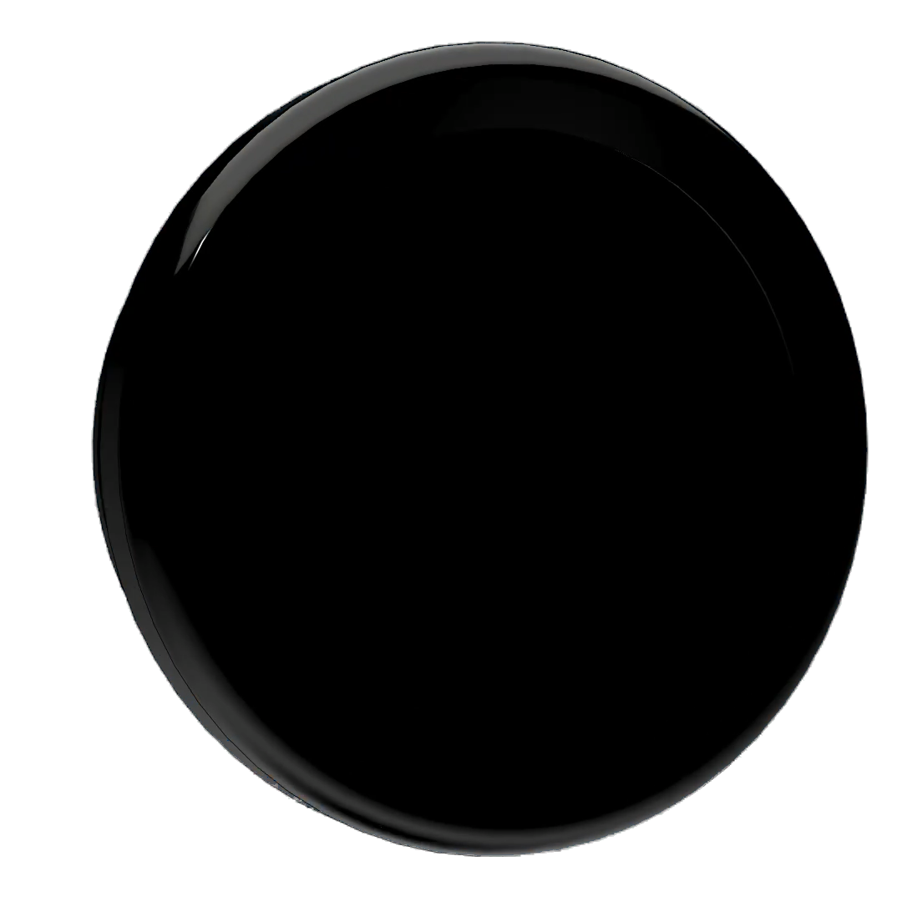
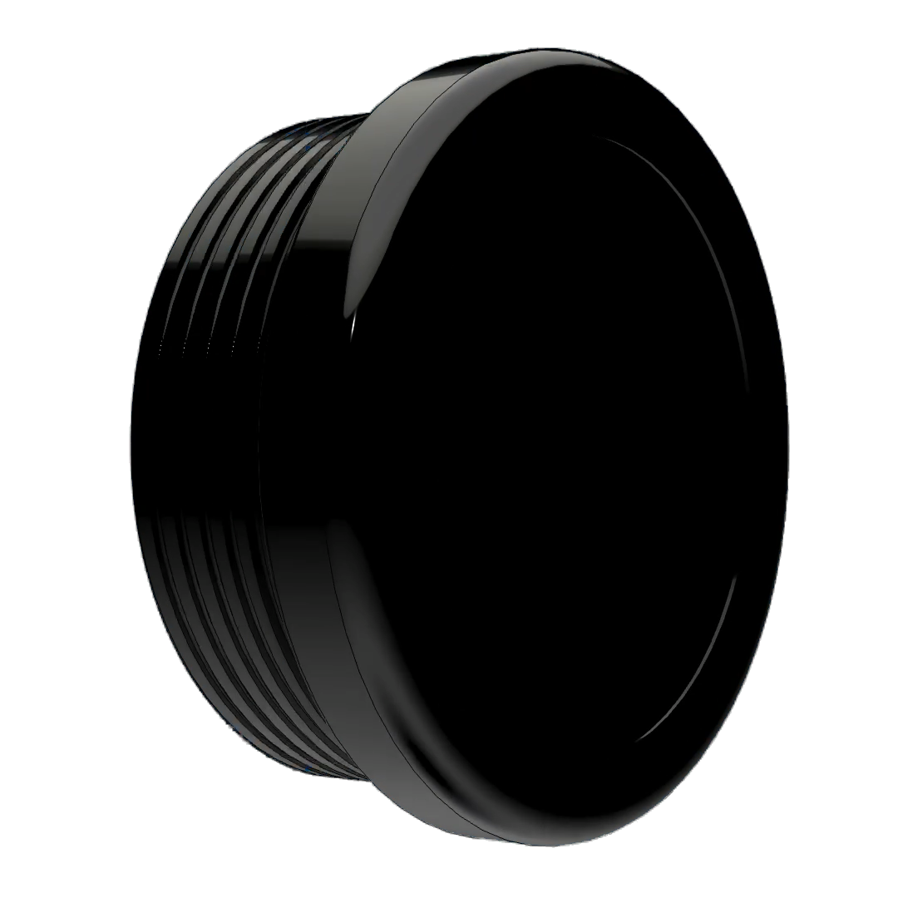
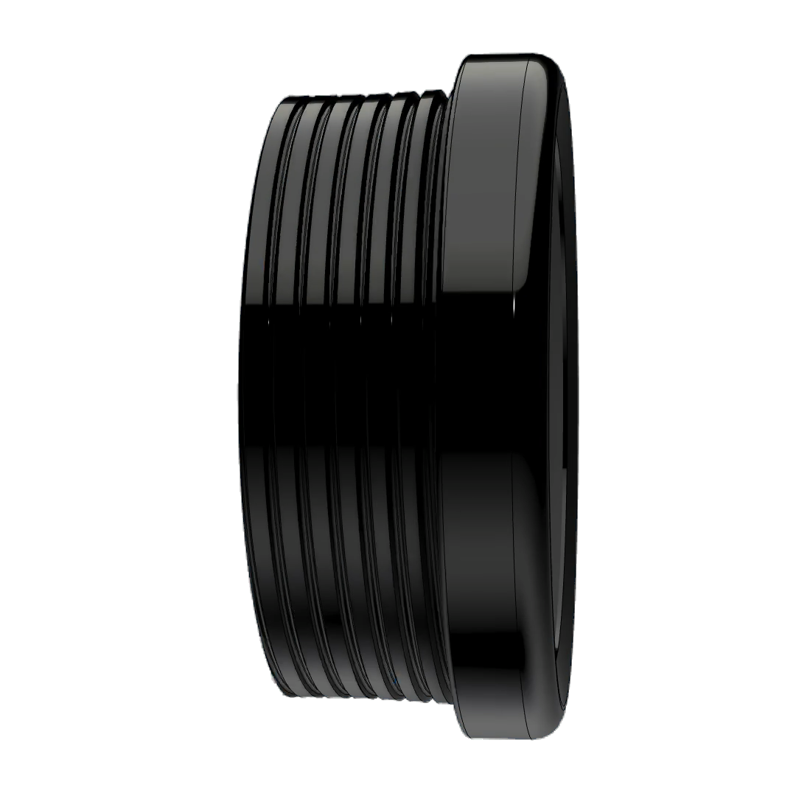
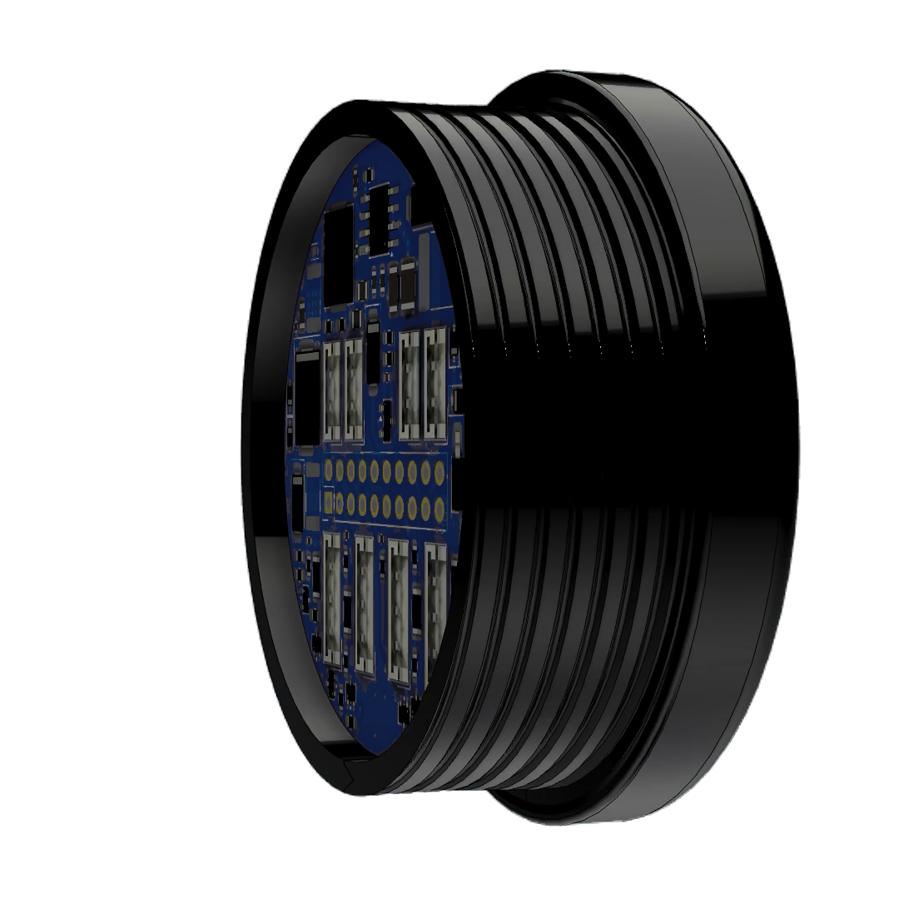
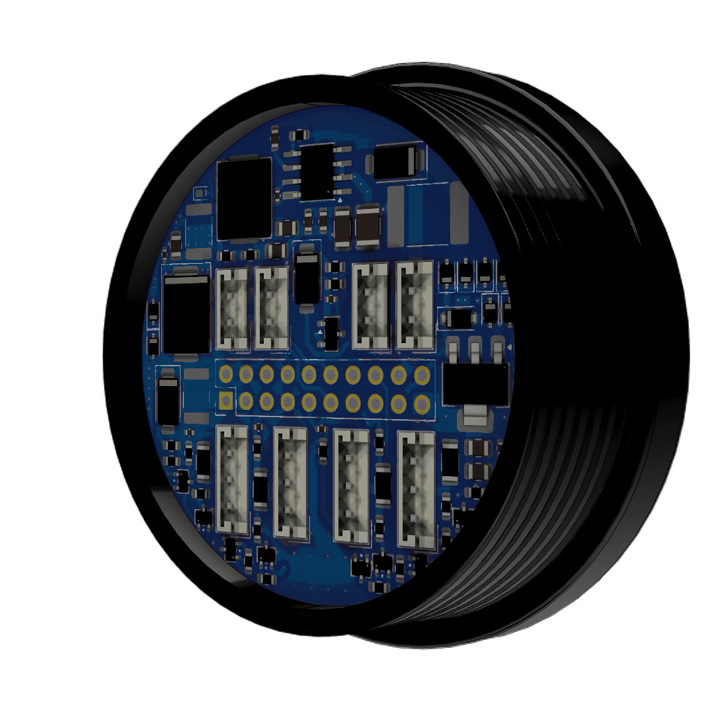
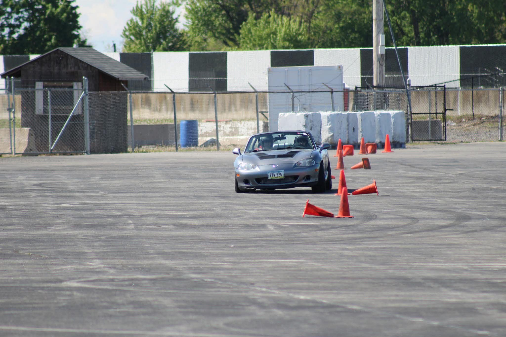

Marcussen Motorsports presents
METRIK
One gauge platform. Built around the way you build.
Designed from the inside out
BUILT
TO SEND.
A compact, purpose-built instrument for real machines and real cockpit time.
Your signal. Your scene.
MAKE IT
YOURS.
Shape every display around the data and driving environment that matter to you.
01 / 04
One system, six letters
A complete
picture.
Six perspectives on a gauge that can change with the build, the input, and the moment.

E
T
R
I
KA different look, on demand
FULLY
CUSTOMIZABLE.
Build a scene that makes your data obvious at a glance. Metrik is designed for the details that make a gauge feel like part of the vehicle, not an afterthought.
- 01 Personalized display scenes
- 02 Day and night-ready presentation
- 03 Inputs that follow your build
Live scene preview
The first production run
BE FIRST
ON THE LIST.
Metrik programmable gauge
Product details, shipping regions, and ordering will open after launch validation is complete.
Meet the people behind it
Made between events.
About Marcussen Motorsports
BUILT IN
THE GARAGE.
Marcussen Motorsports is a father-and-son racing team competing across the Midwest. We build, test, and refine parts around the same problems we run into on our own turbo Miata.
Engine managementMegaSquirt MS3-Pro ECU
Forced inductionKraken turbo kit + GBC 22-350
SuspensionMeisterR coilovers + Whiteline sway bar
Wheels & tiresKonig Dial-In 15x9 + Falken RT660